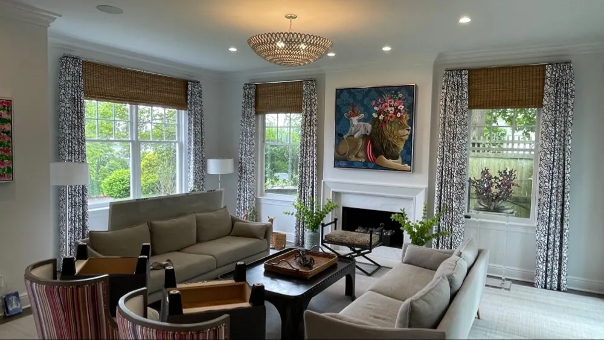
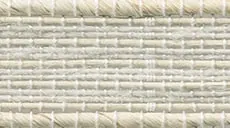
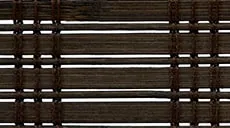
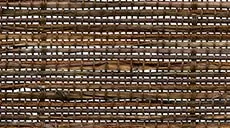
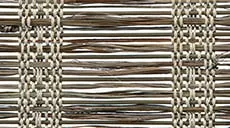
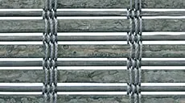
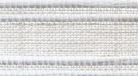
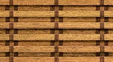
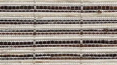
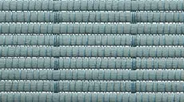

Hunter Douglas · Woven woods
Provenance® woven wood shades
Crafted by hand, our artisanal Provenance® Woven Wood Shades combine the inherent beauty of wood, grasses and reeds for a completely organic design.
Shades made from natural woods, reeds, grass & bamboo
Introduce an element of nature into your home with our artisanal Provenance® Woven Wood Shades.
Provenance Woven Wood Shades are crafted from natural woods, reeds, bamboo and grasses. From textured fabrics to more refined weaves, the natural fibers add an organic style to your room and filter sunlight beautifully.
Add extra flare with customizations—like valances or edge banding. Install them with or without a liner, depending on how much light-filtering and privacy you're after.
However you design them, Provenance shades provide your space with the inimitable quality only achievable with organic fibers.

Key features
Optimal Light Control
For exceptional privacy and light control, a liner is available that operates independently from the shade giving you maximum flexibility for light filtering or room darkening.
Three Styles Available
Provenance shades are available in Roman, Waterfall Roman and Vertical Drapery. Each offers horizontal and vertical applications for every window and door in your home, making the Provenance collection your whole-home solution.
Durable Fabrics
Provenance shades feature the strongest materials and craftsmanship for superb quality. Weaving techniques are engineered to minimize stretching, bowing and breaking. See the beautiful fabric choices available with Provenance Woven Wood Shades.
Decorative Options
Edge banding and valance styles offer additional possibilities for customization.
Modern Headrail
The Modern Headrail is the first metal headrail of its kind in the woven woods category. It allows Provenance shades to function with several of our proprietary operating systems.
A few of our favorite fabrics
This is just a sampling of our fabrics. Request a consultation and we bring every fabric and texture to your home, so you can see them in your own light.

Tamarindo Playa Grande
Palisade Stone
Montauk Jitney
Charleston Spanish Moss
Mindanao Graphite
Calliope Santorini
Kathay Beijing Pecan
Cambria Pebble White
Kiawah Deep Water

Questions we hear often
What makes Provenance® woven wood shades different?
Introduce an element of nature into your home with our artisanal Provenance® Woven Wood Shades.
What is Optimal Light Control on Provenance woven wood shades?
For exceptional privacy and light control, a liner is available that operates independently from the shade giving you maximum flexibility for light filtering or room darkening.
Can I see Provenance woven wood shades samples in my home?
Yes. What you see online is just a sampling. Book a consultation and we bring the full range of fabrics to your home, so you can choose in your own light.
Do you measure and install Provenance woven wood shades?
Yes. We take care of measuring and installation. Our experienced installers are fully trained and will ensure a perfect fit for your new Provenance woven wood shades, and they show you how everything works before they leave.

Let’s look at your windows together.
A free visit, real samples, and an honest recommendation. No pressure to buy on the spot.